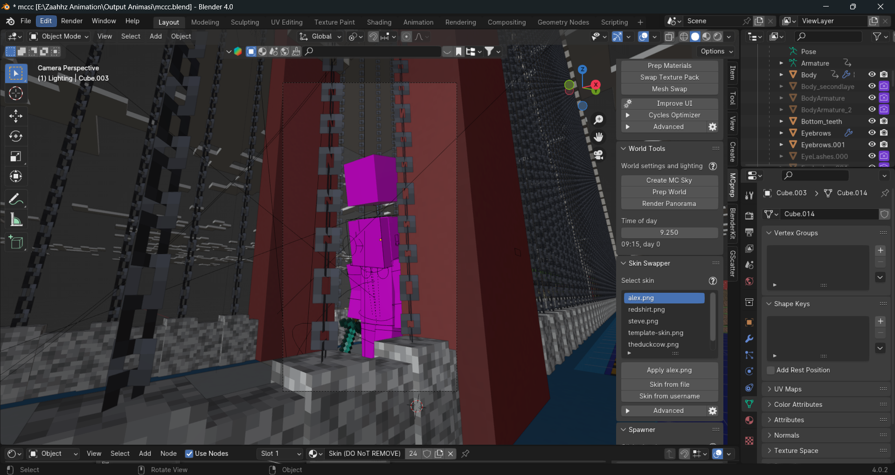

I'm a versatile creative professional specializing in web development, 3D modeling, and video editing. With a keen eye for detail and a commitment to excellence, I craft captivating websites, immersive 3D visuals, and engaging video content that exceed expectations and bring ideas to life. Let's collaborate and turn your vision into reality!
Web Developer

As a skilled web developer, I thrive on transforming concepts into interactive digital experiences. With expertise in HTML, CSS, JavaScript, and various web development frameworks, I specialize in creating visually stunning and highly functional websites tailored to meet the unique needs of clients. From responsive design to seamless navigation, I ensure that every website I build not only looks great but also delivers an exceptional user experience across all devices.
Video Editor

As a skilled video editor, I specialize in crafting compelling narratives and dynamic visuals that resonate with viewers. From footage selection and sequencing to color grading and special effects, I utilize industry-leading software such as Adobe Premiere Pro and After Effects to elevate raw footage into polished productions. Whether it's a promotional video, a documentary, or a social media campaign, I bring storytelling prowess and technical precision to every edit, ensuring that the final product leaves a lasting impression.
3D Modeller
In the realm of 3D modeling, I excel in bringing imagination to life through intricately crafted digital environments and characters. Leveraging industry-standard software such as Blender, Maya, and ZBrush, I meticulously sculpt and texture 3D assets to create immersive visuals that captivate audiences. Whether it's for gaming, animation, or architectural visualization, I bring creativity and technical expertise to every project, ensuring that each model is as visually striking as it is technically proficient.